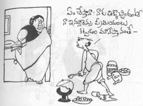
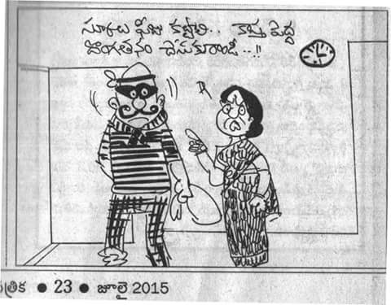

Bapu
Sattiraju Lakshminarayana (15 December 1933 – 31 August 2014), known professionally as Bapu, was an Indian film director, painter, illustrator, cartoonist, screenwriter, music artist, and designer known for his works in Telugu cinema, and Hindi cinema.[1] In 2013, he was awarded the Padma Shri, for his contribution to Indian art and cinema.[2] He has garnered two National Honors, two National Film Awards, seven state Nandi Awards, two Filmfare Awards South, a Raghupathi Venkaiah Award, and a Filmfare Lifetime Achievement Award – South.
Bapu's directorial venture Sakshi (1967) was showcased at Tashkent International film festival in 1968.[3] Seeta Kalyanam (1976) was screened at the BFI London Film Festival, Chicago International Film Festival, San Reno and Denver International Film Festivals in 1978, and is part of the course at the British Film Institute.[4] Tyagayya (1981) and Pelli Pustakam (1991) were premiered at the Indian Panorama of the International Film Festival of India.[5] Bapu's 2011 film, Sri Rama Rajyam, had a special screening at International Film Festival of India on 28 November 2011.
In 1964, he was a delegate at the UNESCO sponsored seminar in Bangalore on Children's Books. The same year, he gave demonstrations for the training course programme on book illustrations and cover designs sponsored by UNESCO in Chennai. In the 1960s he has served as art Consultant for Ford Foundation sponsored The Southern Language Book Trust. He has designed and illustrated several books for leading publishers in South India out of which, five received Government Awards. He has also done the same for innumerable works drawn from Puranas and folklore.
Early life and background
Bapu was born on 15 December 1933,[9] in Narsapur, in present-day West Godavari district, Andhra Pradesh, India to Sattiraju Venugopala Rao and Suryakantam. He has worked as a political cartoonist for the newspaper Andhra Patrika in 1945. He holds B.Com (1953) and BL (1955) from University of Madras.
Painting
Bapu's paintings focus on Hindu mythological characters, and he has painted the Hindu epic Ramayana as a pictorial story. His character portrayals, such as Shiva, Bhima, Duryodhana, look distinctly male with wide chests, large jaws and large biceps; while Krishna and Rama are more feminine in build. His paintings have decorated the cover pages of many magazines in India and Abroad. Telugu Naadi Magazine published from US for Telugu audience have published Bapu's great paintings. Bapu also later served on their advisory board to guide and have an outstanding content for the magazine that catered to Telugu people.
Notable Works
 Awards
- Civilian honours Padma Shri – Government of India – 2013 National honours
- Life Time Achievement Award from Indian Institute of Cartoonists – 2001
- President of India Rashtrapati Award from the Academy of Fine Arts, Tirupati
- Asthana Vidwan by Andhra Pradesh Academy of Arts.